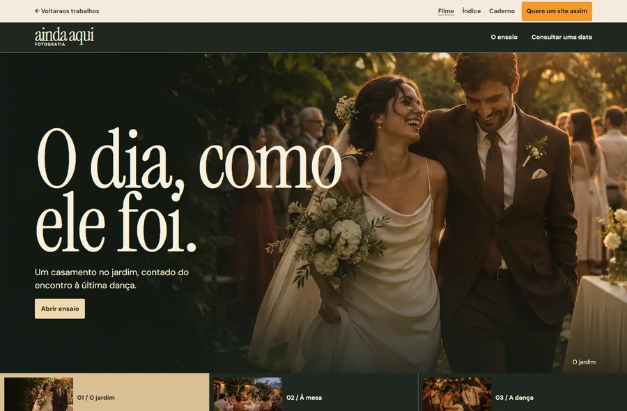
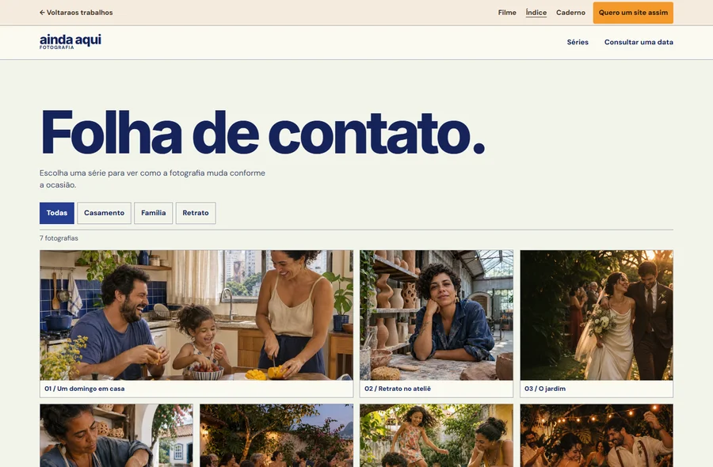
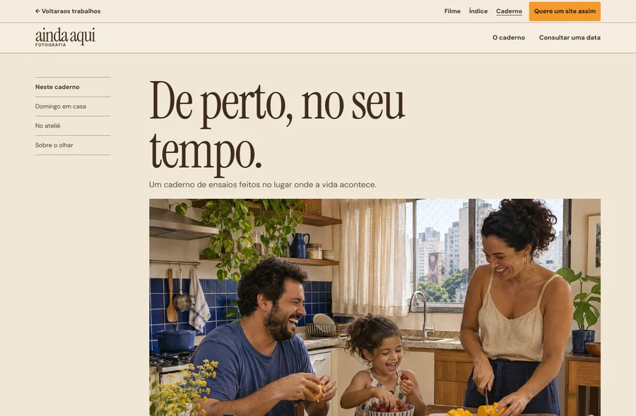

Filme
Uma celebração em três cenas. Abra o ensaio e percorra o dia em tela cheia.
Abrir demonstraçãoTrês formas de conhecer o mesmo estúdio. Abra cada experiência e explore a fotografia no seu ritmo.

Uma celebração em três cenas. Abra o ensaio e percorra o dia em tela cheia.
Abrir demonstração
Uma folha de contato para filtrar séries e ampliar cada fotografia.
Abrir demonstração
Um caderno de histórias com ensaios de família e retrato no local de trabalho.
Abrir demonstração